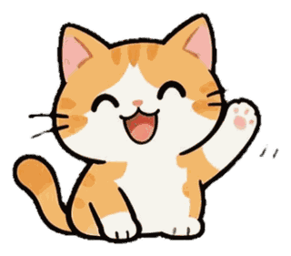
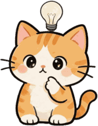

奶油黄里的精读小猫
用轻俏皮的粗线卡片降低学习压力，用清楚的状态与结构保证精读效率。

英语喵 / 一篇一清
参考风格的界面转译
沿用参考案例的视觉性格，不复制宠物业务内容；把学习工具做得亲近但不幼稚。
参考资源为即时设计「宠物屋小程序」[1]。已核验静态封面与源文件样式：奶油底色、明黄与浅黄、深灰 / 黑色描边、圆角白卡、手绘猫咪、几何线条、Source Han Sans CN 字体。本项目在此基础上建立教育产品的信息层级和状态系统。
页面底色保留温度；白卡承载长文本，保证英文阅读清晰。
主按钮、重点卡和猫咪用 2px 深描边；正文列表退为 1px，避免满屏嘈杂。
明黄用于主 CTA、选中态和进度；错误、成功、笔色各有独立语义。
按钮短回弹、卡片上浮、通关小猫轻庆祝；长文阅读不使用持续动画。
设计原则与反例
| 原则 | 应做 | 不应做 |
|---|---|---|
| 一篇一焦点 | 每屏一个主行动；解析按五步有序展开。 | 同屏多个黄色主按钮、无关活动入口、信息流推荐。 |
| AI 结果可校正 | OCR 低置信、手写候选和练习判定均给明确状态。 | 把生成内容画成不可质疑的“标准答案”。 |
| 可爱不牺牲阅读 | 插画集中在空态、首页和结果页。 | 英文句子旁放手绘装饰、正文字体低于 15px。 |
| 颜色 + 文字双编码 | 标签、图标与状态文案同时出现。 | 只靠红黄绿区分通过 / 失败或三种笔色。 |
设计 Tokens
颜色、字体、间距、圆角与阴影统一管理；小程序按 375px / 750rpx 基准换算。
色彩
| Token / 色板 | 色值 | 用途 | 约束与来源 |
|---|---|---|---|
| color.bg.canvas | #FFFCE0 | 小程序页面主背景。 | 参考实测；正文使用深色文字。 |
| color.brand.primary | #FFEB3B | 主 CTA、选中、进度、重点标记。 | 参考实测；按钮文字只用深色，不用白字。 |
| color.brand.soft | #FFE68C | 重点卡、表头、局部高亮。 | 参考实测；不大段代替正文底色。 |
| color.bg.surface | #FFFFFF | 长文卡、输入区、弹层。 | 参考白卡；承载高密度内容。 |
| color.text.primary | #24231F | 标题、正文、关键描边。 | 项目推导，延续深灰 / 黑色视觉。 |
| color.text.secondary | #686353 | 辅助说明、时间、未强调信息。 | 项目推导；不得继续降低透明度。 |
| color.semantic.info | #3568D4 | 链接、焦点、区域框、蓝笔样例。 | 项目推导；同时配文字 / 图标。 |
| color.semantic.success | #2F7A4E | 通过、完成、已确认。 | 项目推导；浅底 #E6F3E9。 |
| color.semantic.error | #B63B2E | 错误、未通过、危险操作。 | 项目推导；浅底 #FCEAE6。 |
| color.pen.red | #D84A3A | 原图红笔示意。 | 只表示笔色，不表示错误；候选另有“红笔”文字。 |
| color.state.disabled | #EAE5D2 | 禁用填充、骨架屏。 | 禁用态还需禁用图标 / 文案，不可仅靠浅灰。 |
字体与排版
首页主标题、通关标题；最多两行。
模块标题；页面导航标题降为 17px。
中文正文、解析与按钮说明；行高 1.75。
英文原句与练习；行高 1.65，左对齐，不强制两端对齐。
| 样式 | 字号 / 行高 | 字重 | 使用场景 |
|---|---|---|---|
| Display | 28 / 38px | 700 | 首页与结果页，不用作长文标题。 |
| Title 1 | 22 / 31px | 700 | 模块标题。 |
| Title 2 | 18 / 26px | 700 | 卡片标题、英文原句。 |
| Navigation | 17 / 24px | 700 | 导航栏页面名。 |
| Body | 15 / 26px | 400 / 500 | 正文与主要说明。 |
| Label | 14 / 20px | 500 / 700 | 按钮、标签、表单标签。 |
| Caption | 12 / 18px | 400 | 辅助信息；不可承载关键错误说明。 |
小程序字体栈：Source Han Sans CN / 思源黑体 → 系统中文黑体。数字与文档编号可使用 Work Sans；等宽字体只用于 ID 和状态代码。本文 HTML 已内置 Work Sans 与 JetBrains Mono，中文采用本机黑体回退，无远程字体依赖。
间距、圆角、描边与阴影
4px 基础网格
卡片内边距 16px；模块间距 24px；页面左右 16px；紧凑列表内部 8 / 12px。
形状与层级
- 主卡 16px 圆角；按钮 / 输入 12px；图片 12px；胶囊 999px。
- 主按钮、重点卡 2px 深色描边；普通卡 1px；分隔线 1px 浅线。
- 可按压主按钮：下缘 3px 实影；普通卡：0 5px 0、14% 深色影。
- 弹层使用遮罩与轻阴影，不同时叠加粗影和强模糊。
375px 布局、导航与触控
先保证单手完成主链路，再适配字体放大、不同屏宽和微信胶囊。
四列只用于小模块；正文始终占满内容宽。
| 区域 | 规格 |
|---|---|
| 设计宽度 | 375px = 750rpx；1px = 2rpx。 |
| 页面边距 | 左右 16px / 32rpx；内容宽 343px。 |
| 卡片网格 | 4 列，列沟 8px；词汇与长文不使用多列。 |
| 触控目标 | 最小 44×44px / 88×88rpx；相邻目标至少 8px 间隔。 |
| 固定底部 CTA | 左右 16px，按钮高至少 48px；底部加系统安全区。 |
| 长文阅读 | 英文 18px，中文 15–16px；避免横向滚动。 |
导航结构
- P01 首页：产品名 + 微信胶囊区域，无全局底部 Tab；主任务是导入与继续最近文章。
- P02–P11：左上返回 + 居中或左对齐页面标题；保留胶囊安全区，不将操作塞进胶囊。
- P04 工作台：页内三个模块卡，不设置全局 Tab，避免与“文章 → 首页”的返回层级冲突。
- P06 / P08：解析滚动页 + 固定“开始练习”CTA；句子切换放在内容顶部。
- P09：作答页固定提交按钮；键盘弹起时输入区与提交保持可见，不被底部按钮遮挡。
- 弹层：只用于短确认、筛选或提示；OCR 校对、手写调区和作答使用完整页面。
橘猫 IP：可爱，但不抢学习的注意力
角色暂称「喵仔」[2]，只做情绪与状态陪伴；结论、进度和操作始终由文字与真实数据承担。
这套橘猫以用户提供的 8 张透明底图为实际 IP 素材，已按内容边界裁剪、保留约 4% 呼吸位，导出为长边 320px 的透明 PNG；加载失败时退回纯文字，不留空白占位。造型保留橘色虎斑、奶油口鼻、粗描边、粉色腮红、黑豆眼的可爱特征，道具收敛到学习场景：书、放大镜、词卡、灯泡、对勾、光环，一件道具只表达一个功能。
专注，不催促
只表示通过

喵仔 · 思考解析中 / 待校对不表示失败
500ms 一次
8 张素材的裁剪结果与投放
统一裁掉四周空白，只保留猫和必要道具，四边留约 4% 呼吸位；素材本身已是透明底，导出长边 320px 内的透明 PNG。当前单张 8.2–12.7KB，8 张合计 78KB，满足单图 ≤60KB、总量 ≤300KB 的预算。素材存放于 assets/ip/，可直接接入小程序。
造型与语义规范
| 项目 | 规范 | 原因 |
|---|---|---|
| 比例 | 小尺寸以头像 / 半身为主；大尺寸完整姿态按约 1 : 1.2 头身比，站、坐、趴三种，不做复杂 3D 角度。 | 小尺寸下仍可辨认，降低多姿态素材量。 |
| 描边 | 统一 5px 深褐 #2B2622；圆头圆角，线帽 round。 | 与卡片 2px 描边同一视觉语言，放大不糊。 |
| 色板 | 橘 #F5A04A / 浅橘 #FFC98A / 奶油 #FFF6E8 / 腮红 #F7B9AE / 条纹 #E08A3C。 | 贴合奶黄色底，且不用渐变和写实毛发。 |
| 表情 | 黑豆眼 + 白色高光；开心为张嘴笑，思考为睁眼 + 灯泡，庆祝为闭眼大笑 + 光环；均不画獠牙。 | 情绪可读，但不制造攻击性或夸张戏剧感。 |
| 道具 | 书 = 导入；放大镜 = 筛词 / 手写；词卡 = 词汇；灯泡 = 长难句；对勾 = 通过；光环 = 通关。 | 道具承担功能提示，替代额外说明文字。 |
| 禁止 | 不在猫身上写答案、分数或“错了”；不举正确 / 错误牌；不使用第三方表情包与真实品牌。 | 避免角色伪造状态，也避免版权与商标风险。 |
页面投放与尺寸
| 页面 | 尺寸 | 角色状态 | 位置与限制 |
|---|---|---|---|
| P01 首页 | 120–168px | 开心 / 日常 | 标题下方视觉区；不遮挡“拍照导入”，不覆盖微信胶囊。 |
| P02 图片整理 / 识别中 | 72–96px | 思考 | 识别进度卡内；逐页真实状态仍以文字和页码为准。 |
| P03 OCR 校对 | 48–64px | 思考 | 页尾提示区；不压住低置信词、原图和“确认文本”。 |
| P04 工作台 | 64–72px | 日常 | 进度卡右上角；猫不显示百分比，进度只来自真实单元。 |
| P05 词汇空态 | 72px | 日常 | 仅空分类出现；有词卡时隐藏，避免每屏都有猫。 |
| P06 长难句解析 | 72–96px | 思考 | 步骤标题旁；阅读正文与展开步骤时保持静止。 |
| P07 手写确认 | 72px | 日常 | 仅页面下半区提示；绝不覆盖原图、候选框和笔迹。 |
| P09 练习作答 | 48–64px | 日常 / 思考 | 输入区上方；键盘弹起时可隐藏，不挤压输入框。 |
| P10 练习结果 | 96–120px | 开心 | 仅“完全 / 近似正确”出现；需修改与暂未判定不出现庆祝表情。 |
| P11 文章通关 | 120–160px | 庆祝 | 首次通关播放一次；回顾页面静态展示，不反复动。 |
柔和微动效
| 动作 | 节奏 | 属性 | 暂停 / 降级 |
|---|---|---|---|
| 眨眼 | 6–8s 一次，单次 120ms | 眼睑 scaleY；不带动整只猫位移。 | 阅读、校对、输入、调区时暂停。 |
| 尾摆 | 3–4s 循环，±2° | 尾部 rotate，transform-origin 在尾根。 | 减少动态时静态；离屏与 onHide 暂停。 |
| 耳动 | 偶发 8–12s，单次 180ms | 单侧耳朵 rotate ±3°。 | 不与眨眼同帧叠加，避免频繁抖动。 |
| 解析思考 | 1.6s 循环 | 问号 / 灯泡 opacity 呼吸，猫身不动。 | 骨架屏已表达等待，猫不再重复动。 |
| 庆祝 | 500ms 一次 | scale(.94→1) + 光环淡入；不做粒子。 | 仅首次通关；不自动跳转、不阻塞按钮。 |
| 进场 | 180ms · ease-out | opacity + translateY(6px→0)。 | 滚动复用不重播；减少动态时直接显示。 |
性能预算与降级
| 指标 | 上限 / 做法 | 验证方式 |
|---|---|---|
| 单张插画 | ≤ 60KB；透明 PNG 或内联 SVG。当前 8 张为 8.2–12.7KB。 | 构建产物逐个检查，超限压缩或删细节。 |
| IP 资源总量 | ≤ 300KB，不随页面重复打包。当前 8 张合计 78KB。 | 小程序包体分析；共用 symbol 只保留一份。 |
| 动画开销 | 只动 transform / opacity；单屏最多 1 个动画。 | 低端机录屏与 Performance 面板抽查。 |
| 加载策略 | 猫咪异步加载，不阻塞导入按钮与首屏文字。 | 弱网下首屏可用，猫后到不引起布局跳动。 |
| 暂停 | 离屏、页面隐藏、减少动态时停止循环。 | 切换页面后无后台动画与额外耗电。 |
| 失败降级 | 加载失败显示纯文字状态，不留空白占位。 | 断图 / 断网演练，主链路仍可完成。 |
版权与上线门槛
| 风险 | 当前状态 | 缓解措施 |
|---|---|---|
| 参考图权属 | 用户提供的 8 张橘猫图权属未核验；已按用户要求裁剪并用于设计稿与原型演示，仍不视为已获商用授权。 | 正式发布前取得书面授权或替换为原创重绘，并归档授权记录；未确认前素材仅用于设计评审与内部演示。 |
| 与现有 IP 近似 | 橘猫为常见题材，仍可能与在先形象近似。 | 上线前做形象与商标初筛，保留检索记录；必要时调整配色、花纹与道具。 |
| 名称商标 | 「英语喵」「喵仔」未做注册检索。 | 提交审核前检索相关类别；角色名保持可替换，不写死在代码与素材命名中。 |
| AIGC 合规 | 若使用生成式工具产出素材。 | 保留生成与人工修改记录；不用他人作品做图生图；按平台要求标注。 |
| 上线门槛 | — | 权属、商标与素材清单由产品负责人确认后才可发布；缺失任一项则先用纯文字版本。 |
Do
- 猫只在状态变化时出现，静止时不妨碍阅读。
- 与按钮、输入框、原文、划线保持至少 8px 间距。
- 每只猫都有中文 alt 或装饰性
aria-hidden。 - 同一屏最多一只猫、一个动画。
- 失败、待判定、加载中都使用中性或思考表情。
Don't
- 不用猫替代错误文案、进度数字或按钮。
- 不做无限漂浮、视差背景、全屏彩带。
- 不用未授权素材，也不把本项目素材二次转售或对外分发。
- 不让猫遮住原图笔迹、低置信词和提交按钮。
- 不在“需要修改 / 暂未判定”时出现庆祝或光环。
核心组件与状态
组件同时定义默认、按压、加载、禁用、成功和异常，不以静态“理想态”交付。
主按钮与次按钮
| 状态 | 视觉 | 行为 |
|---|---|---|
| 默认 | 明黄底、2px 深描边、3px 下缘实影、深字。 | 每屏最多一个主按钮。 |
| 按压 | 向下 3px，实影收起；120ms。 | 释放后执行；不可用长回弹延迟操作。 |
| 加载 | 保留按钮宽， spinner + “正在识别…”文字。 | 禁用重复提交，不只转圈而无说明。 |
| 禁用 | 浅底、浅描边、说明性禁用原因就近展示。 | 不响应点击；不能用低透明度代替全部状态。 |
| 危险 | 浅红底 + “删除文章”明确文字。 | 必须二次确认，不使用明黄。 |
单选筛选 Chips + 重叠标签
常见义：n 地址；住址 · 原句定位 →
难点：词性与形近词 · 原句定位 →
- 筛选为单选；“全部”清除条件。选中态是明黄填充 + 2px 偏移实影 + 字重，不只变颜色。
- 所有识别出的英语单词，展示释义时必须附带对应词性标注：使用
v动词、adj形容词、n名词、adv副词、prep介词、conj连词等标准缩写；词性紧贴对应义项，一词多义时分别标注，禁止只显示裸中文释义。 - 词性标签与词汇等级标签视觉区分：词性使用描边小胶囊并紧跟“文中义 / 常见义”，等级与难点标签集中在词卡底部。
- 词卡上的标签只读，不承载筛选点击，避免与整卡“查看详情”冲突。
- 标签可重叠，分类计数不可相加；筛选无结果时显示空态和“查看全部”。
- 类别超过屏宽时横向滚动并露出下一项边缘；同时提供可见滚动提示，不要求用户发现隐藏手势。
五步结构解析
the pattern 主语 becomes 谓语 clear 表语
STEP 2 · 再挂修饰
Only when… 是条件状语；主句发生部分倒装。
| 步骤 | 展示方式 | 展开规则 |
|---|---|---|
| 1 找主干 | 英文原句内使用底色 + 文字角色标签。 | 默认展开。 |
| 2 挂修饰 | 缩进树或分层卡，不用复杂横向语法树。 | 默认展开首层。 |
| 3 还原结构 | 原语序 → 还原语序，变化片段加粗。 | 有倒装 / 省略时展开。 |
| 4 理清逻辑 | 条件、因果、指代等使用短句解释。 | 默认展开。 |
| 5 整合翻译 | 分层直译与完整译文分组；语序调整就近注释。 | 用户主动展开完整译文。 |
英文角色标注必须带文字，不能只用多种颜色。步骤过多时允许折叠，但当前展开状态在返回后保留；折叠不能影响“开始练习”按钮的可达性。
手写区域候选框
Only when the data are examined in context does the pattern become clear.
已选红笔候选：第 2 段，可调整边界或排除。
- 候选框使用信息蓝，与原笔色区分；框外原图不压暗，框内不覆盖底色，避免看不清笔迹。
- 两端手柄视觉尺寸 12px，但触控热区扩展到 44px；拖动时显示对应 OCR 文本。
- 候选标签始终写“红笔 / 黑笔 / 蓝笔 + 页段位置”；颜色无优先级。
- 提供“调整边界、拆分区、删除误检、手动框选”；删除需可撤销，不要求二次确认。
- 划线原文和上下文补全在 P08 使用不同标题，不使用同一高亮混为一段。
翻译作答与反馈
只有在语境中审视这些数据，这一模式才会变得清晰。
关键语义与目标结构正确；可优化表达，但不阻塞通关。
| 反馈类型 | 容器 / 图标 | 动作 |
|---|---|---|
| 完全正确 | 浅绿底 + 对勾 + “完全正确 · 通过”。 | 进入 P10，展示参考答案。 |
| 近似正确 | 浅绿底 + 对勾 + “近似正确 · 通过”；优化建议另列。 | 同样进入 P10，不用黄色暗示失败。 |
| 需要修改 | 浅红底 + 提示图标 + 错误类别。 | 留在 P09，保留答案并聚焦反馈；可返回解析。 |
| 暂未判定 | 浅蓝底 + 网络 / 服务状态 + “答案已保留”。 | 允许重试，不计通过，不清空输入。 |
加载、成功与局部失败
其他已完成模块可继续学习。
骨架屏只模仿文本行，不展示虚假百分比；局部失败在具体模块内重试。成功状态至少停留到用户能读懂，不用短暂 Toast 代替持久完成标记。
11 个关键页面线框
以下为代表性状态，不是全部数据；页面 ID 与 PRD 一致，示例数字仅用于标注布局。
不止读过。
拍照导入，把词、长难句和你的划线一次解决。
这篇在备战？
继续最近学习
导入与最近文章
主行动：拍照 / 相册。四级或六级未选时主按钮禁用并就近说明。最近文章显示真实单元进度，不用词汇浏览量替代。
- 权限拒绝：解释用途 + 设置入口 + 替代导入。
- 取消导入：停留原页，不创建空文章。
支持多页；页序会决定全文识别顺序。
Only when the data are examined in context does the pattern become clear.
The results suggest a different interpretation of the finding.
图片整理与识别
主行动：开始识别。缩略图保留页码；添加、排序、旋转、替换均有可见入口，不依赖长按隐藏手势。
- 单页失败：该页标错并可重试，其他页不清空。
- 无有效图片：CTA 禁用并说明“至少保留 1 页”。
点击文字可定位原图；黄色下划线项需修正或确认。
原图 · 第 1 页 · 可双指缩放
识别文本
The results suggest a different interpretation.
改为 context 确认无误
OCR 文本校对
主行动：确认文本。原图与文本上下布局，避免 375px 双栏挤压；点击任一侧同步定位。
- 低置信：底色 + 红色下划线 + 文字说明，不能只靠颜色。
- 处理后 CTA 变可用；空文本仍禁用。
- 已有分析后再次修改：确认前展示失效范围。
六级 · 文本已确认 · 学习中
本篇消化进度
2 / 4 个解析单元通关
词汇不计入通关分母
文章学习工作台
主行动：继续下一个未完成单元。进度 = 已通关单元 / 有效单元，不用虚假百分比；空单元按 PRD 处理。
- 模块卡显示加载、失败、待确认和完成。
- 文本变更导致通关撤销时顶部说明原因。
- 没有有效单元时 CTA 改为“手动选重点”。
单选筛选 · 同一词可保留多个标签
文中：v 处理（问题）
常见：n 地址；住址
语境证据
The study addresses a question that earlier work left unresolved.
这里不是“地址”，而是“着手处理问题”。
词汇筛选结果
主行动：切换分类、看语境、定位原句。词卡优先展示文中义，熟词生义再对照常见义。
- 词形与原形同现；多义项分条，不合成含糊词卡。
- 标签全部可见，必要换行；不横向挤压英文。
- 首版不放置“已掌握”伪判定或背词打卡按钮。
Only when the data are examined in context does the pattern become clear.
主干：the pattern becomes clear.
主语 / 谓语 / 表语使用角色标签。
Only when… 引导条件状语，主句用部分倒装。
长难句解析
主行动：开始双向练习。原句固定在内容首卡，角色标注与五步解释对应；解析展开状态返回后保留。
- 解析失败在句卡内重试，不阻塞其他句。
- 练习生成失败时 CTA 变为“重新生成练习”。
- 已通关可“查看练习 / 重新练习”，不撤销历史通过。
双指缩放原图；蓝色候选框不代表笔色。
Only when the data are examined in context does the pattern become clear.
候选 1 对应文本
Only when the data are examined in context…
手写标记定位与区域确认
主行动：确认候选。原图占主要面积；候选列表与图片框同步选中，调区时显示对应 OCR 文本。
- 支持拆分、删除、手动补选和撤销。
- 无候选：显示“没找到清晰横线” + 手动框选。
- 横线无对应正文：不可确认，引导重选。
你划到的内容
does the pattern become clear
主句的倒装部分
为理解补全的完整句
Only when the data are examined in context does the pattern become clear.
补全范围与原划线分开展示
重点结构
Only when 位于句首，主句把助动词 does 提到主语 the pattern 前。
先译条件“只有……”，再还原主句，中文不保留英文倒装语序。
手写区域解析
主行动：巩固划线结构。先回到用户关注点，再展示上下文；翻译思路比完整译文更靠近划线解释。
- 区域变化后显示新版本，旧练习不混入。
- 同句同结构共享完成状态；额外结构另计。
- 红 / 黑 / 蓝只作为来源文字，不用颜色区分重要度。
Only when the data are examined in context does the pattern become clear.
你的中文翻译
不必与参考答案逐字一致；先保证语义和条件逻辑。
双向翻译练习
主行动：提交翻译。顶部明确方向、题号和目标结构；中译英额外提示“请使用目标句式”。
- 空答案禁用提交；评测中锁定重复提交。
- 失败后反馈插在输入区下方并保留答案。
- 暂未判定点用信息蓝，不画成失败或通过。
关键语义与条件逻辑都正确。
你的译文
只有在语境中检查这些数据，规律才会清楚。
参考译文
只有结合语境审视这些数据，这一模式才会变得清晰。
“审视”比“检查”更贴近 examine 的语境。
本单元进度
英译中已通过 · 中译英待完成
练习结果
主行动：下一题；若双向均完成则“完成本单元”。近似正确与完全正确都使用成功语义，不显示惩罚性颜色。
- 通过后才展示参考译文和可接受表达。
- 优化建议与通关结果分区，避免用户误以为仍需重试。
- 重新练习不撤销历史通过。
所有有效单元的双向练习都已通过。
长难句
手写重点
单元通关
本篇回顾
文章通关总结
主行动：导入下一篇或回顾。庆祝只在首次达到完成态播放一次，回顾页面不反复动。
- 空单元文章不得进入此页。
- 展示长难句 / 手写单元完成数，不展示“词汇已掌握”。
- 完成态被新内容更新时，P04 提示，P11 保留历史总结。
交互动效：轻回弹，不拖慢学习
以下均为本项目推导规范；优先表达因果与状态，不为“活泼”添加持续运动。
动效原则
- 按压即响应：按钮在触摸时立即下沉，不等网络返回。
- 结果有落点：解析完成后卡片轻微上浮，用户知道新内容在哪里。
- 长任务不造假：骨架 / 阶段文字可以循环，但不展示虚构百分比。
- 阅读时静止：长文、原图调区和输入时不运行装饰动画。
- 减少动态：遵循系统设置，改为瞬时状态切换和文字反馈。
| 场景 | 时长 / 缓动 | 属性 | 状态与例外 |
|---|---|---|---|
| 按钮按压 | 120ms · ease-out | translateY(3px) + 实影收起。 | 加载 / 禁用不播放；减少动态时直接切换。 |
| Chip 选中 | 160ms · ease-out | 底色、2px 偏移实影、字重。 | 筛选列表同步更新，不等动画结束。 |
| 卡片进入 | 180ms · cubic-bezier(.2,.8,.2,1) | translateY(8px→0) + opacity。 | 仅新解析出现；滚动复用不反复播放。 |
| 页面转场 | 240ms · ease-out | 小程序原生左右转场优先。 | 返回方向相反；不使用 3D 翻转。 |
| 底部弹层 | 280ms · ease-out | translateY + 遮罩淡入。 | 遮罩点击只关闭可取消任务；调区 / 校对不用弹层。 |
| 步骤展开 | 200ms · ease-out | 高度 + 内容透明度。 | 避免布局跳动；阅读位置不突然偏移。 |
| 练习通过 | 360ms · 轻 spring | 对勾 scale(.92→1) + 成功卡淡入。 | 不用全屏粒子；失败不抖动整个手机。 |
| 猫咪眨眼 / 尾摆 | 眨眼 6–8s 一次；尾摆 3–4s 循环 | 眼睑 scaleY、尾部 rotate ±2°；猫身不位移。 | 阅读、校对、输入、调区时暂停；减少动态时静态展示。 |
| 文章通关 | 首次 500ms 内 | 猫咪 / 对勾一次轻回弹。 | 不自动跳转，不阻塞按钮；减少动态时静态展示。 |
加载、空态、错误与文案系统
所有状态告诉用户“发生了什么、数据是否保留、下一步能做什么”。
| 场景 | 视觉容器 | 标准文案 | 行动 |
|---|---|---|---|
| OCR 处理中 | 当前页缩略图 + 骨架 + 阶段文字。 | 正在识别第 1 页，已完成的页面会保留。 | 取消未开始任务 / 返回。 |
| 模块解析中 | 模块卡内骨架，不遮挡全页。 | 正在解析长难句，词汇可以先看。 | 进入已就绪模块。 |
| 单模块失败 | 浅红局部卡 + 提示图标。 | 这部分还没解析成功，其他内容可以继续。 | 重试本部分。 |
| 无词汇匹配 | 白卡 + 线性小猫，不用错误红。 | 本文未筛到该类词汇，换个分类看看。 | 查看全部。 |
| 无手写候选 | 原图缩略 + 手动框选示意。 | 没找到清晰的横线，可以在原图上框选。 | 手动框选 / 重新上传。 |
| 答案未通过 | 输入区下浅红反馈卡。 | 需要修改：条件关系译成了因果关系。 | 修改重试 / 返回解析。 |
| 评测不可用 | 浅蓝反馈卡 + 服务状态。 | 暂未判定，答案已保留。 | 重新提交。 |
| 通关撤销 | P04 顶部浅黄说明卡。 | 文本已更新，3 个解析单元需要重新学习。 | 查看变化。 |
| 删除文章 | 居中确认对话框 + 遮罩。 | 删除后将移除本文图片、解析和作答记录。 | 取消 / 确认删除。 |
文案语气
说具体动作
“调整第 2 页方向”优于“图片异常”；“重新提交”优于“确定”。
不评价用户
“条件关系需要复查”优于“你理解错了”；不使用羞辱式学习话术。
不夸大 AI
“暂未发现候选”优于“全文无问题”；“暂未判定”优于“应该正确”。
Toast、持久反馈与对话框分工
- Toast：已复制、已撤销等低风险短反馈；不用于 OCR 失败、练习结果和通关。
- 持久反馈卡：解析失败、文本失效、作答判定等需要阅读和行动的状态。
- 对话框：删除文章、确认会使分析失效的变更；普通筛选、返回和重试不弹窗。
- Snackbar：删除误检候选后提供“撤销”；离开当前文章后不再允许跨文章撤销。
无障碍、响应式与输入适配
核心链路不能只服务标准字号、精准触控和稳定网络。
可读与可操作
- 正文与背景对比度至少 4.5:1；大标题至少 3:1，实际交付前自动 + 人工复核。
- 明黄按钮始终使用深色文字；次级文字不再降低透明度。
- 触控目标至少 44×44px；区域手柄热区大于视觉手柄。
- 焦点使用 3px 信息蓝外框，不能只改变底色。
- 错误、笔色、通关均由颜色 + 图标 / 文字双编码。
- 屏幕阅读标签包含页面、状态和动作，例如“候选 1，红笔，第 2 段，已选中”。
动态与认知负担
- 遵循系统减少动态效果设置；不自动播放音效或持续震动。
- 骨架动画可停止；减少动态时使用静态骨架和阶段文字。
- 解析按五步分组；不一次呈现长篇 AI 输出。
- 反馈先给结论，再给原因和下一步；错误可恢复。
- 倒计时、 streak、排行榜不进入 MVP，避免不必要压力。
- 通关庆祝不自动跳转，用户控制继续节奏。
屏幕宽度与字体放大
| 条件 | 布局策略 | 不可发生 |
|---|---|---|
| 320–359px | 页面边距保持 16px；按钮文字允许换行或缩短为已定义短文案；筛选 chips 横滚。 | 英文正文缩到 18px 以下、按钮热区低于 44px。 |
| 360–430px | 使用流式宽度；内容最大宽不强制拉伸卡片装饰。 | 按固定坐标放置候选框；必须绑定原图变换。 |
| 系统字体放大 | 卡片高度自适应；标签换行；底部 CTA 可增高；正文滚动。 | 文字裁切、按钮遮正文、进度数字重叠。 |
| 英文长词 / URL | 允许合理断行；正文不两端对齐，不大写整段。 | 横向滚动整页。 |
| 横屏 / 分屏 | P07 可切换原图与文本双栏；其他页保持单栏居中。 | 强制用户横屏才能完成主流程。 |
| 键盘弹起 | 输入框滚入可见区；提交按钮跟随安全区；反馈不遮输入。 | 键盘挡住答案或反馈。 |
原图缩放的可达性
双指缩放与拖动必须有按钮替代：“放大 / 缩小 / 适应宽度”。调区手柄支持触控；若无法为屏幕阅读提供可靠拖动操作，则提供“文本起止位置选择”的替代流程。原图候选的选中状态同时更新下方文本，不只靠视觉框。
设计交付与验收清单
交付到可实现的组件与页面状态，不以一张首页效果图代替完整 MVP。
交付物结构
色彩、字体、间距、圆角、描边、阴影、375px 安全区与触控。
按钮、筛选、解析步骤、手写区域、作答反馈、异步状态及其全部状态。
P01–P11 主链路、返回路径、空态、加载、失败与完成。
设计与产品联合验收
视觉与布局
- 背景 #FFFCE0、主色 #FFEB3B、浅黄 #FFE68C 使用一致。
- 主按钮深字、2px 描边和按压下沉一致。
- 长英文无横向整页滚动，不被装饰遮挡。
- 375px 下 CTA、微信胶囊与底部安全区不冲突。
- 320px、字体放大、键盘和横屏按规范检查。
行为与状态
- 四个 P0 均可从 P01 走到对应学习结果。
- OCR 未处理低置信项时不能继续。
- 五类词筛选为单选，词卡标签可重叠。
- 所有单词的每条释义均带 v / adj / n / adv / prep / conj 等对应词性，多义项分别标注。
- 手写候选可调、可删、可补选，笔色无优先级。
- 近似正确与完全正确都通过，暂未判定不通过。
- 文本变更后的失效、保留与通关状态符合 PRD。
资源命名与实现约束
- 资源按
模块_对象_状态_尺寸命名，例如mark_region_red_selected_48；不导出无意义整屏切图。 - 猫咪、对勾、提示、返回等线性图标使用 SVG / 矢量资源，线帽与线 join 采用 round；普通图标 24px，关键描边 2px。
- 原图不作为固定美术资源；候选框、手柄、笔色和文字必须随图片缩放 / 旋转同步。
- 组件状态由真实业务状态驱动，禁止前端用定时器伪造 OCR、解析或评测成功。
- 实现前评审词表版本、隐私说明、性能阈值等 PRD 中的 TBD，UI 不替这些业务决策补值。
来源与一致性说明
参考范围清晰，未核验内容明确标为项目推导。
视觉来源为即时设计资源社区「宠物屋小程序」[1]。本文沿用其静态视觉语言，不复制页面布局或业务内容。动效、教育组件、学习状态、无障碍与所有页面结构均为英语喵 MVP 的项目设计。
配套阅读：英语喵 MVP 产品设计文档。若交互行为与 UI 表达冲突，先回到 PRD 的对象状态与通关规则评审，再同步修改两份文档，不做单页特例。